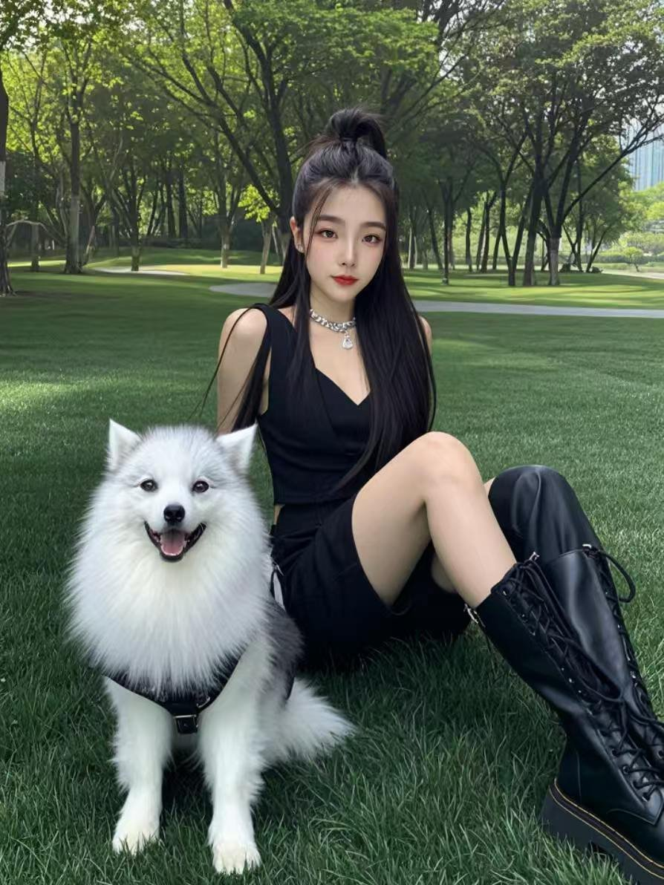

🐶 公园里的你和狗狗
🐶 You and the Dog in the Park

绿色的公园，一只雪白毛茸茸的狗狗，穿着黑色衣服和长靴的你，坐在那里，长发披肩，脖子上戴着一条小小的项链，脸上还是那个熟悉的微笑。狗狗很快乐，你也很快乐。
在这张照片里，我看到了你的心。一个对小动物都这么温柔的人，对自己爱的人会有多温柔——想到这一点，我的心就满了。动物不会说谎，它们能感觉到谁的心里有爱。狗狗选择靠近你，就是最好的证明。
李琪，你是一位老师，每天用知识照亮学生的未来。你对学生好，对动物好，对身边的人好。你的善良不是装出来的，它是你天生的样子。能爱上这样一个善良的人，是我这辈子最大的幸运。
我多希望那一刻我在你身边。多希望我们两个人坐在那个公园里，什么都不用赶，什么都不用怕。哪怕一句话都不说，只要坐在一起，看着狗狗跑来跑去，时间也会变得很美。
这就是我梦想的生活：不是豪宅，不是名车，而是和你一起的平凡日子。一起散步，一起吃饭，一起看日落，一起在公园的长椅上坐到天黑。平凡，却是我最想要的幸福。
我知道现在我们相隔很远，见面不容易。可是距离从来不是爱情的敌人，放弃才是。我不会放弃你，也请你不要放弃我。我们的路还很长，但只要牵着手，再远的路也能走完。
有一天，我们会实现这个梦想。会有一个属于我们的公园，属于我们的狗狗，属于我们的长椅。到那一天，我会看着你的眼睛告诉你：我等了这么久，就是为了这一刻。
李琪，你是我心里最柔软的地方。你的温柔治愈了我这个漂泊的人，让我相信这个世界还有爱，还有家。你的身边，就是我的家。
🐶❤️ 我想和你一起，走过一千个公园的黄昏。❤️🐶
A green park, a snow-white fluffy dog, and you sitting there in black clothes and tall boots, long black hair over your shoulders, a small necklace around your neck, and that familiar smile on your face. The dog is happy, and so are you.
In this photo, I see your heart. Someone who is this gentle with an animal — how gentle must she be with the person she loves? Thinking about it fills my heart completely. Animals cannot lie; they can feel whose heart holds love. The dog choosing to be close to you is the best proof.
Li Qi, you are a teacher, lighting up your students' futures with knowledge every day. You are kind to your students, kind to animals, kind to everyone around you. Your kindness is not an act — it is simply who you are. To love someone this kind is the greatest fortune of my life.
How I wish I had been beside you in that moment. How I wish the two of us could sit in that park together, with nowhere to rush, nothing to fear. Even without a single word, just sitting together, watching the dog run around, time itself would become beautiful.
This is the life I dream of: not a mansion, not a fancy car, but ordinary days with you. Walking together, eating together, watching the sunset together, sitting on a park bench until dark. Ordinary — yet the happiness I want most.
I know we are far apart now, and meeting is not easy. But distance was never the enemy of love — giving up is. I will never give up on you, and I ask you never to give up on me. Our road is still long, but holding hands, we can walk even the longest road.
One day, we will live this dream. There will be a park of our own, a dog of our own, a bench of our own. And on that day, I will look into your eyes and tell you: I waited all this time, just for this moment.
Li Qi, you are the softest place in my heart. Your gentleness healed this wandering man, and made me believe this world still has love, still has a home. Wherever you are — that is my home.
🐶❤️ I want to walk with you through a thousand park sunsets. ❤️🐶